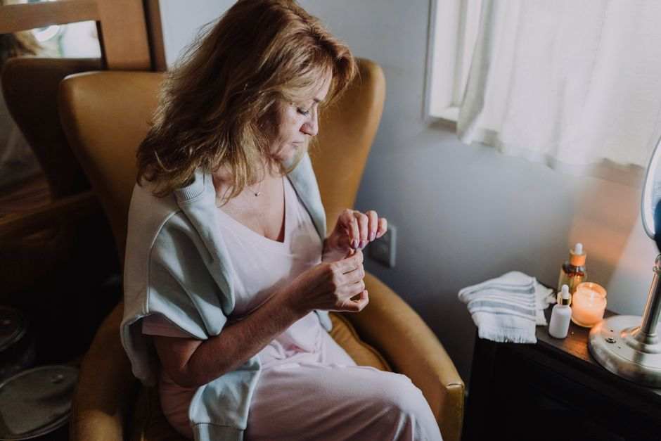

Stress and the Body
Why Am I So Drained After Socializing?
- Is it normal to feel exhausted after being around people?
- Why does socializing use so much energy?
- Why do introverts and sensitive people feel it more?
- Does masking make social exhaustion worse?
- Why do I feel lonely even though socializing tires me?
- How can I recover after socializing?
- When should I talk to a professional?
- Pause for Reflection
- FAQ
You feel drained after socializing because connection costs your nervous system real energy. In a group, your body is quietly scanning faces, tracking tone, filtering noise, and managing how you come across. If you are introverted, sensitive, neurodivergent, or already stressed, that load adds up fast. The tiredness is a signal to recover, not a flaw.
Is it normal to feel exhausted after being around people?
Yes, it is very common. Many people love their friends and family and still need quiet time afterward to feel like themselves again. Feeling tired after a gathering does not mean you dislike people or that something is wrong with you.
What matters is noticing the pattern. A little fatigue after a big event is ordinary. Needing days to recover from every coffee date, or dreading invitations you once enjoyed, is your body telling you something about the load it is carrying.
Why does socializing use so much energy?
Because your nervous system never stops working in a room full of people. Beneath the conversation, it is constantly asking, "Am I safe here? Am I welcome? Did that land well?" Researchers call this background safety scan neuroception. It runs without your permission and without rest.
When the answer feels uncertain, your body leans toward its stress response. Harvard Health explains how even mild, ongoing stress keeps the body's alert system switched on. Hold that state for a whole evening, and the crash afterward makes sense. Your body has been on duty the entire time.
Why do introverts and sensitive people feel it more?
Some nervous systems take in more. Sensitive people notice more detail: the shift in a friend's face, the hum of the lights, the conversation two tables over. Each piece of information has to be processed, and processing takes energy.
Introversion is not shyness and it is not a problem to fix. It simply describes where you tend to recharge. Introverts often enjoy people deeply and still refill their energy in quiet.
If loud, bright, crowded places leave you frazzled rather than just tired, you may relate to my post on why you get overstimulated so easily.
Does masking make social exhaustion worse?
Very often, yes. Masking means managing how you appear: forcing eye contact, laughing at the right moment, hiding discomfort, or performing a version of yourself you think others expect. Many neurodivergent adults mask for years without realizing how much it costs.
Masking is exhausting because it asks your body to do two jobs at once: be in the room and guard the door. Brains are wired differently, not incorrectly, and the struggle usually comes from a mismatch between a person and their environment. In my neurodivergent support work, we focus on helping the nervous system feel safer, so less energy goes into guarding and more is left for living.
Why do I feel lonely even though socializing tires me?
This is one of the most confusing parts. You can need people and still feel worn out by them. Usually that means the connection is costing more than it is giving back, often because you could not fully be yourself in it.
Real rest in relationships comes from being known, not just being present. I explore this tension in why you can feel lonely even around people.
How can I recover after socializing?
Gentle recovery helps your body come back to center:
- Plan quiet on purpose. Leave an empty evening or morning after big events, so recovery is built in rather than stolen.
- Lower the input. Dim the lights, soften the noise, and give your eyes and ears a break.
- Let your body move the stress through. A slow walk, a stretch, or a warm shower can help the nervous system downshift.
- Choose smaller doses. One honest conversation often nourishes more than a crowded room.
- Drop one mask. With a safe person, practice saying "I am tired" or "I need to head home" without apology.
Even Jesus stepped away from the crowds. He told His disciples, "Come away by yourselves to a desolate place and rest a while" (Mark 6:31). Withdrawing to recover is not selfish. It is part of how we were designed.
When should I talk to a professional?
If you are pulling away from people you love, feel persistently low, or notice changes in sleep, appetite, or interest in life, please talk with your physician or a licensed counselor. If you ever have thoughts of harming yourself, call or text 988 to reach the Suicide and Crisis Lifeline.
Pause for Reflection
Close your eyes for a moment and let your breath slow.
Ask gently: Where did I feel most like myself this week? Where did I spend energy holding a mask in place?
Your need for quiet is not rejection of the people you love. It is how your body makes room to love them well.
You are allowed to rest after being with others.
FAQ
Is social exhaustion the same as social anxiety?
Not necessarily. Social exhaustion is tiredness after connection. Social anxiety involves intense fear around social situations. If fear is keeping you from living fully, talk with a qualified professional.
How long does it take to recover from socializing?
It varies. Some people need an hour of quiet, others a full day. Noticing your own rhythm helps you plan.
Can stress make social fatigue worse?
Yes. A body already carrying stress has less energy left for connection, so gatherings may feel heavier during hard seasons.
Where can I get support?
If you would like help understanding what your nervous system needs, send me a note through the contact page. We can take it gently.
This article is for educational purposes and is not medical advice. It is not intended to diagnose, treat, cure, or prevent any disease. Please work with a qualified practitioner, and consult your physician before making changes to your health routine.
In Renewal,
Lynette Wing
Founder of Renewal Health
Clinical Homeopath, Naturopath, Mind-Body Practitioner
Dedicated to root-cause healing and whole-person alignment. Guiding clients to emerge, align, and live fully, restoring vitality, clarity, and sustainable wellness. About Lynette